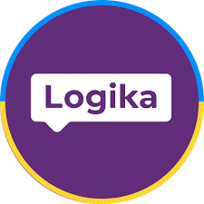
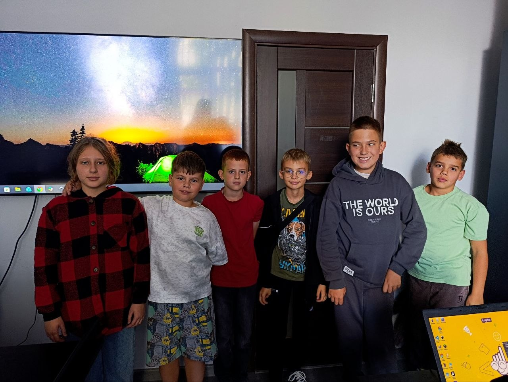
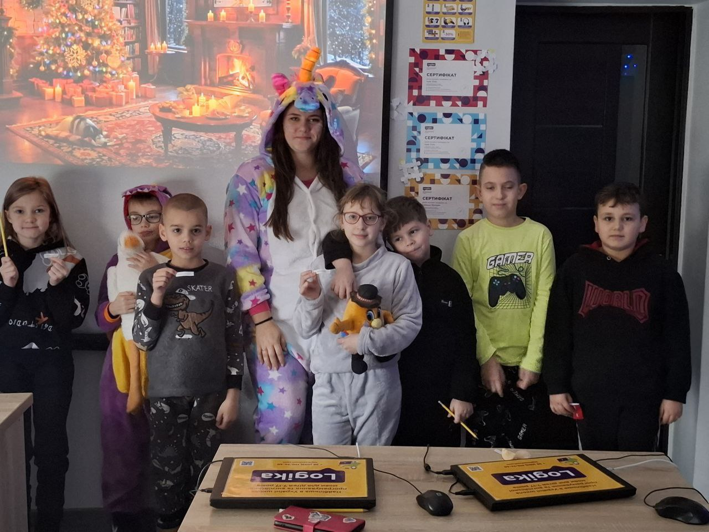
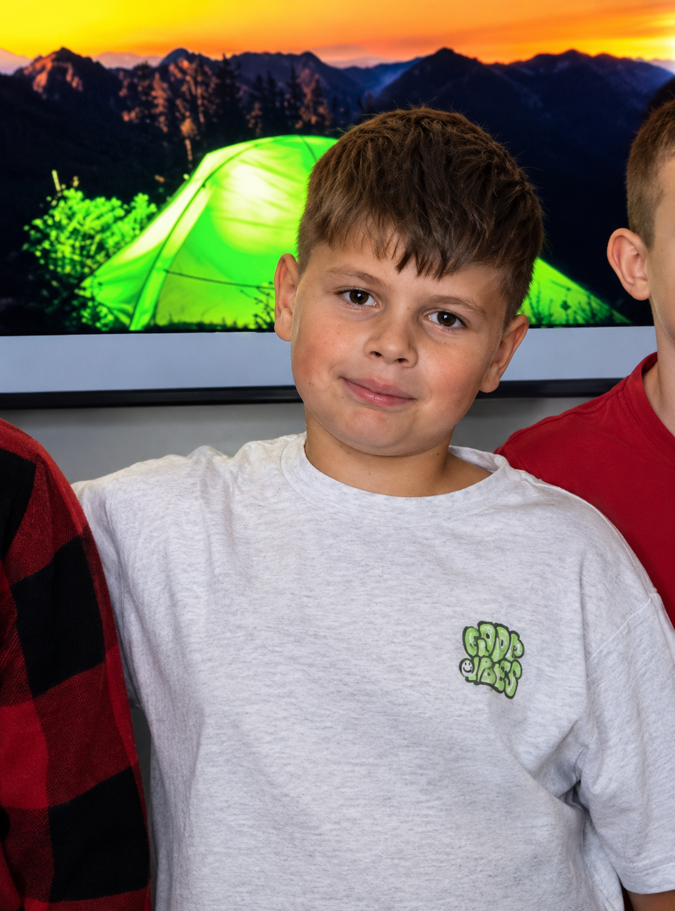
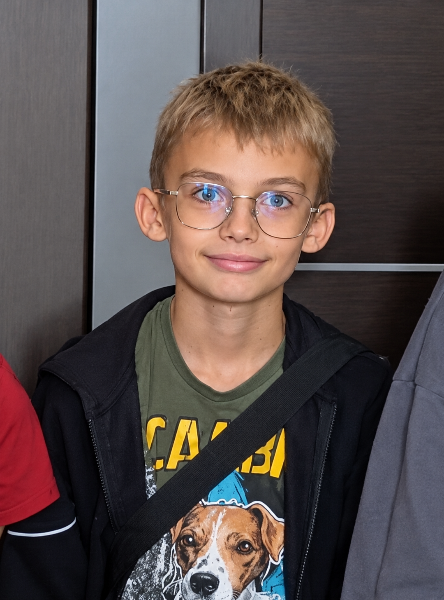
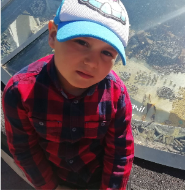
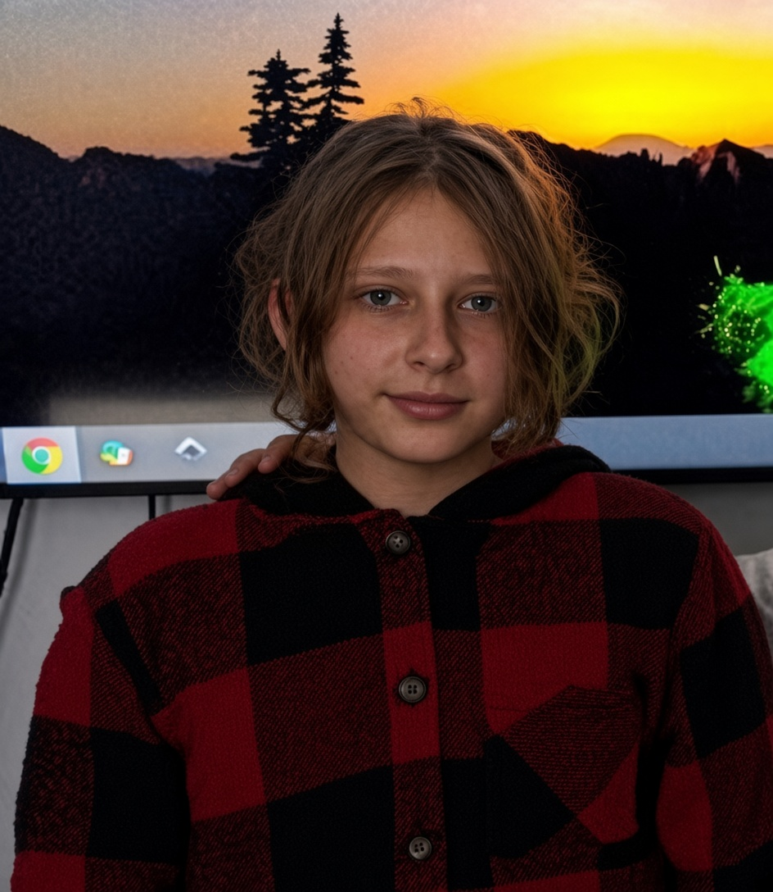
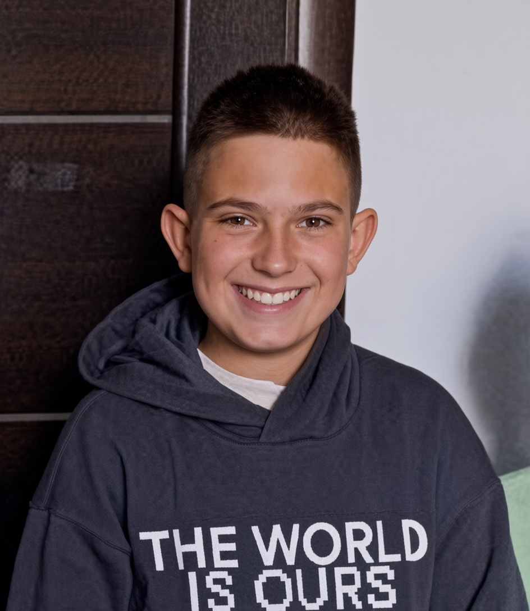
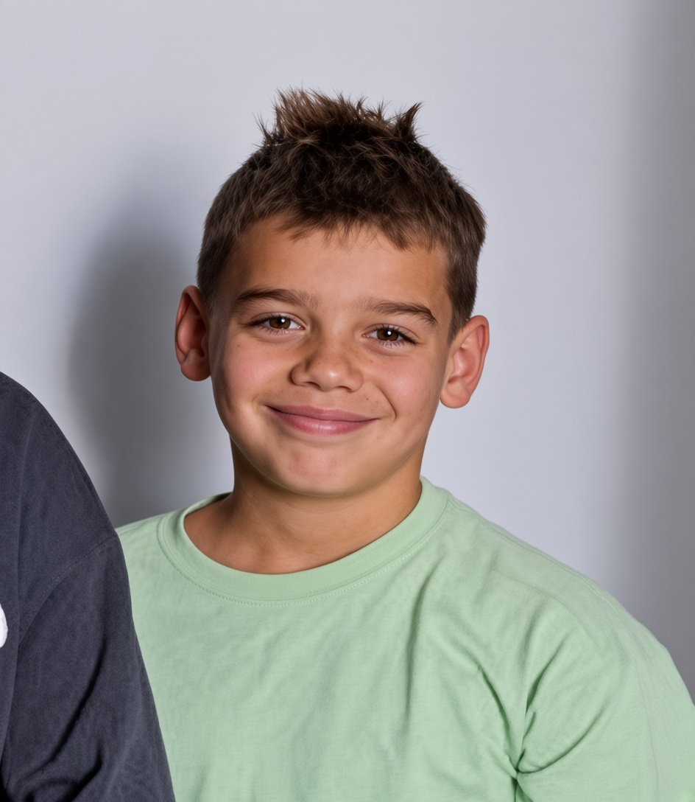
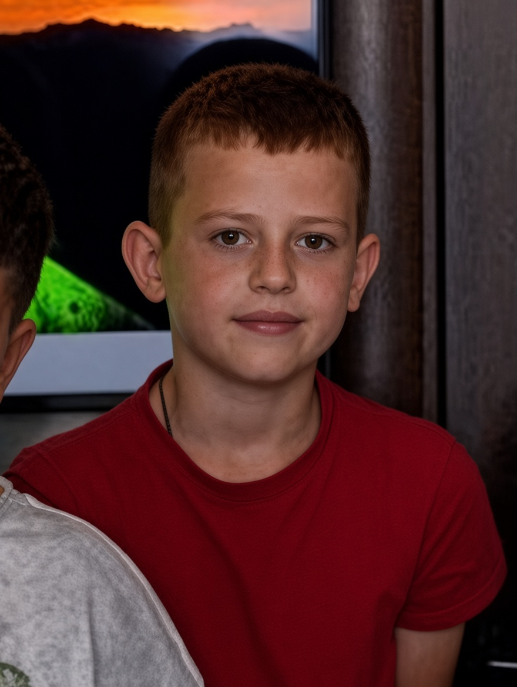

✦
IDEA
+
CREATIVITY
=

<WEB/>Наші учні — це креативні, допитливі та активні творці, які не бояться експериментувати, пробувати нове та створювати власні проєкти.
+
=



Активний та зацікавлений учень, який із цікавістю пробує нові інструменти. Любить експериментувати, створювати власні ідеї та знаходити нестандартні рішення.
Завжди цікавиться новими можливостями та не боїться ставити запитання. Наполегливо працює над завданнями та поступово перетворює свої ідеї на готові проєкти.


Проявляє фантазію та любить створювати щось своє. Швидко освоює нові інструменти й із задоволенням працює над творчими завданнями.
Уважна до деталей та відповідально ставиться до своїх проєктів. Любить бачити результат своєї роботи й постійно вдосконалює свої навички.


Спокійний і зосереджений учень, який любить розбиратися в деталях. Ретельно підходить до кожного етапу роботи і вміє доводити проєкт від першої ідеї до фінального результату.
Енергійний і відкритий до нового. Легко пробує різні підходи, не боїться помилятися і швидко вчиться на досвіді. У його роботах завжди відчувається живий інтерес і драйв.


Має хороший смак і відчуття гармонії. Любить, коли все виглядає акуратно і стильно. Уважно слухає поради, втілює їх у життя і радіє, коли проєкт виходить дійсно крутим.